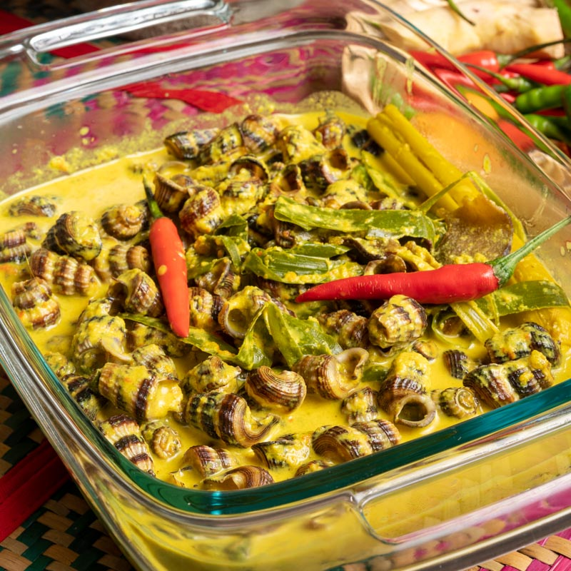

Siput Sedut Masak Lemak Cili Api

Masa Penyediaan: 40 minit
Masa Memasak: 20 minit
Jumlah Hidangan: 3-4 orang makan
Bahan-Bahan
- 700g siput belitung
- 4 cawan santan sederhana cair
- ATAU 2 kotak kecil santan + air
- 3 biji bawang merah kecil
- 3 ulas bawang putih
- 1-2 ketul kunyit hidup
- 1 batang serai
- 1/2 inci halia
- 8-10 tangkai cili padi
- 1 helai daun kunyit
- 1 asam keping
- Garam secukup rasa
- Serbuk seasoning, jika suka
Cara Penyediaan
- Cara-cara untuk bersihkan siput sedut:
- Rendam siput sampai tenggelam dan gesel-gesel kulit biar tertanggal lumpur.
- Tapis dan bilas dengan air. Ulang proses 2-3 kali sampai air jernih. Nak berus satu – satu pon boleh
tapi Che Nom tak berapa rajin.
- Rendam siput dengan air garam dan tutup selama 30 minit (tujuan untuk siput muntahkan pasir dalam siput
tu). Che Nom ada baca petua gaul siput dengan kelapa parut semalaman tapi renyah jadi Che Nom guna cara
yang mudah kalau nak cuba masak.
- Bilas dengan air sekali lagi.
- Potong buang hujung ekor cengkerang anggaran 3 ruas siput supaya ada ruang udara untuk kita sedut masa
makan nanti. Che Nom guna gunting pokok kalau nak guna pisau potong daging pon boleh.
- Celur siput dengan air panas anggaran 30 saat dan kacau-kacau.
- Toskan air dan ketepikan dulu.
- Cara untuk masak lemak cili api:
- Potong kasar cili padi, bawang merah kecil, bawang putih, halia (pilihan), kunyit hidup (kalau tak ada
boleh ganti dengan kunyit sebuk).
- Masukkan bahan potong kasar dan air separuh tenggelam. Kemudian kisar halus.
- Serai, trim hujung akar dan batang, buang lapisan yang keras kemudian titik atau tumbuk serai.
- Masukkan bahan kisar dalam periuk. Masak sampai naik wap panas (tapi belum mendidih).
- Masukkan santan dan garam. Kacau sebati.
- Untuk masakkan lebih berlemak, boleh kaut masuk kepala santan (bahagian santan yang pekat dan terapung).
- Masukkan asam keping, serai dan koyak masuk daun kunyit. Kerap kacau sampai mendidih.
- Masukkan siput sedut dan kacau anggaran 5 minit atau sampai mendidih (naik gelegak sekali ja), tak perlu
masak lama sebab siput dah celur tadi.
- Tambah santan, serbuk seasoning dan garam mengikut selera masing-masing.
- Bila dah mendidih sekali boleh tutup api dan hidang.
- Selepas masak biarkan siput terendam anggaran 1/2 jam barulah makan barulah kuah bergaul sebati dengan
siput.